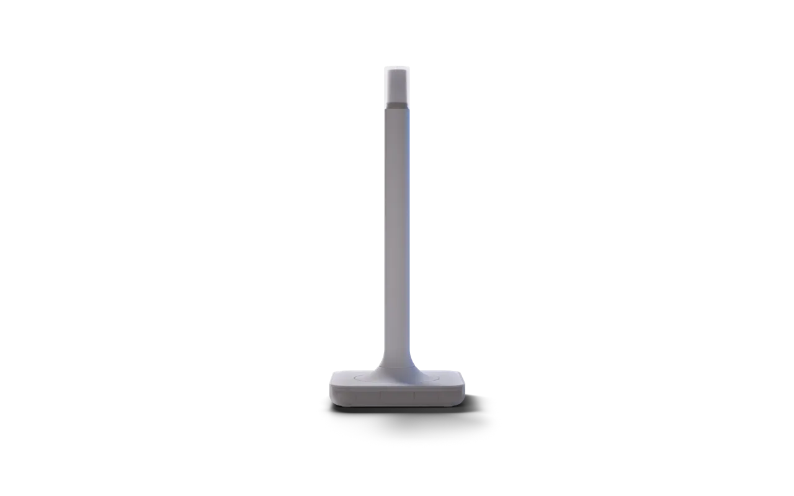

Guide · Z-Wave
The best Z-Wave hub for Home Assistant (2026)
Disclosure: HA News earns a commission from qualifying purchases made through the Amazon links on this page. Prices and stock are on Amazon; we don't quote them here.
Home Assistant doesn't need a separate Z-Wave hub. The "hub" is a USB Z-Wave controller plugged into the machine that runs Home Assistant, driven by the Z-Wave JS integration. That keeps your locks, switches and sensors local, with no vendor cloud. For most people the best Z-Wave hub for Home Assistant is the official Home Assistant Connect ZWA-2, an 800-series adapter built by Nabu Casa with a large tuned antenna and Z-Wave Long Range support. A good 800-series USB stick is the compact alternative.

What a Z-Wave hub does in Home Assistant
Z-Wave devices form a mesh on a sub-GHz radio, away from the 2.4 GHz band that Wi-Fi, Bluetooth, Zigbee and Thread share. Every network needs one controller. In Home Assistant that controller is a USB adapter, and the Z-Wave JS software talks to it, either through the Z-Wave JS app on Home Assistant OS or through Z-Wave JS UI if you run things yourself. Devices then show up in Home Assistant like any other integration. If you're still choosing a radio, read Zigbee vs Z-Wave first.
Our pick: Home Assistant Connect ZWA-2
| Spec | Connect ZWA-2 |
|---|---|
| Z-Wave chip | Silicon Labs ZG23, Z-Wave 800 series, certified |
| Protocols | Z-Wave and Z-Wave Long Range, running at the same time |
| USB bridge | ESP32-S3 (USB-serial) |
| Power and data | USB-C, 5 V DC, 1 A; 1.5 m USB cable in the box |
| Antenna | 860-930 MHz, omnidirectional, 3.38 dBi peak gain |
| Regions | US 908.42/916 MHz mesh and 912/920 MHz LR; EU 868.4/869.85 MHz mesh and 864.0/866.0 MHz LR; AU 919.8/921.4 MHz |
| Use | Indoors, 0-65 °C, non-condensing humidity |
The ZWA-2 is big on purpose. Nabu Casa says the antenna and base are tuned to Z-Wave's wavelength, while typical USB sticks use tiny antennas that limit range. In its own tests it reached 1.5 km (0.9 mile) with clear line of sight, and Long Range devices connected through several concrete floors. It runs a regular Z-Wave mesh and a Long Range star network at the same time, and when you add a Long Range-capable device the setup wizard asks which network it should join. Firmware updates are one click from Home Assistant, and Nabu Casa says you can migrate automatically from most modern Z-Wave sticks.
Buying one also funds the project: Nabu Casa, which builds official Home Assistant hardware, contributes most of its profits to the Open Home Foundation. Check Home Assistant Connect ZWA-2 on Amazon for current price and stock.
The alternative: an 800-series USB stick
If you want something small that plugs straight into a port, pick a USB stick built on the 800-series chips, which also support Z-Wave Long Range. A Zooz 800 Series Z-Wave Long Range stick (Zooz 800 Series Z-Wave Long Range USB stick on Amazon) is a common choice. Put any stick on a short USB extension cable, away from USB 3 ports and the computer itself, to cut interference. Older 500- and 700-series sticks still work with Z-Wave JS, but if you're buying new, buy 800 series.
Buy the right region
Z-Wave frequencies are set by region. A US controller won't talk to EU devices, and the other way round. Buy the controller and every device for the region where you live.
Setting it up
- Plug the adapter into the machine running Home Assistant (for example a Raspberry Pi or Home Assistant Green).
- Home Assistant should discover it. Otherwise go to Settings, then Devices & services, then Add integration, and choose Z-Wave.
- On Home Assistant OS, let it install the Z-Wave JS app. Create a new network, or migrate an existing one from your old stick.
- Add devices with their SmartStart QR code or inclusion button. Add mains-powered devices such as switches first so the mesh has repeaters before battery sensors join.
FAQ
Do I need a Z-Wave hub for Home Assistant?
You need a Z-Wave controller, but not a vendor hub. A USB adapter such as the Connect ZWA-2 plugged into your Home Assistant machine is the hub.
What is the best Z-Wave hub for Home Assistant?
The official Home Assistant Connect ZWA-2. It uses the 800-series chip, supports Z-Wave Long Range alongside the normal mesh, and is built by the team behind Home Assistant and Z-Wave JS. An 800-series USB stick is the compact alternative.
Can I use Z-Wave and Z-Wave Long Range at the same time?
Yes, with a controller that supports both. The ZWA-2 runs the two networks at once, and you choose which one each Long Range-capable device joins.
Can I move my existing Z-Wave network to a new adapter?
Usually, yes. Home Assistant says you can migrate automatically from most modern Z-Wave sticks to the ZWA-2. Its documentation lists any special steps.
Will a US Z-Wave adapter work in Europe?
No. Z-Wave frequencies are regional, so the controller and devices must all match your region.
We publish a daily brief on Home Assistant, Zigbee, Z-Wave and Matter releases. Read today's.
- Primary sources
- Home Assistant Connect ZWA-2; Home Assistant Z-Wave integration; Z-Wave JS UI; Z-Wave Alliance